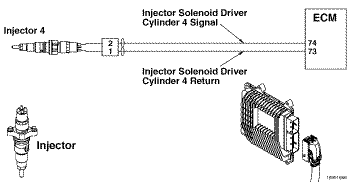
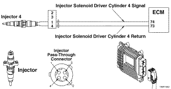
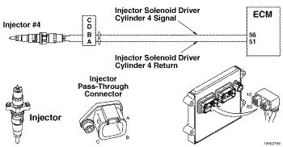
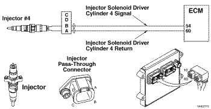
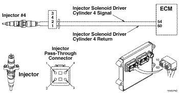
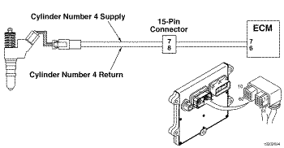
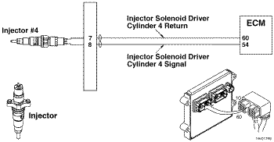

Cdigo de Falha 332
|
| CDIGO | RAZO | EFEITO |
| Cdigo de Falha:332 PID:S006 SPN:654 FMI:5/5 LMPADA:mbar SRT: |
Circuito do Acionador do Solenide do Injetor do Cilindro No. 4 - Corrente Abaixo da Normal ou Circuito Aberto. Detectada corrente no circuito do injetor No. 4 com a voltagem desligada. |
A corrente para o injetor est desligada. Dificuldade na partida ou funcionamento irregular do motor. |
|
 ISF2.8 CM2220 E/ISF2.8 CM2220 AN - Circuito do Acionador do Solenide do Injetor
|
|
 ISF3.8 CM2220 AN - Circuito do Acionador do Solenide do Injetor
|
|
 ISB4.5, ISB6.7, ISD4.5 e ISD6.7 CM2150 SN - Circuito do Acionador do Solenide do Injetor (motor de 4 cilindros)
|
|
 ISB4.5, ISB6.7, ISD4.5 e ISD6.7 CM2150 SN - Circuito do Acionador do Solenide do Injetor (motor de 6 cilindros)
|
|
 ISL8.9 CM2150 SN - Circuito do Acionador do Solenide do Injetor
|
|
 ISM11 CM876 SN - Circuito do Acionador do Solenide do Injetor do Cilindro No. 4
|
|
 ISZ13 CM2150 - Circuito do Acionador do Solenide do Injetor do Cilindro No. 4
|
As vlvulas solenides dos injetores controlam a quantidade de combustvel alimentado e a sincronizao de injeo. O mdulo eletrnico de controle (ECM) energiza o solenide fechando um interruptor 'lateral alta' e um interruptor 'lateral baixa'. Existem dois interruptores 'lateral alta' e quatro interruptores 'lateral baixa' no interior do ECM. Os injetores para os cilindros nmeros 1 e 2 (banco dianteiro) compartilham um nico interruptor 'lateral alta' que conecta o circuito do injetor fonte de voltagem alta no ECM. Da mesma forma, os injetores para os cilindros nmeros 3 e 4 (banco traseiro) tambm compartilham um nico interruptor 'lateral alta'. Cada circuito de injetor tem um interruptor 'lateral baixa' dedicado que completa o caminho do circuito com o massa no interior do ECM.
O chicote do motor conecta o ECM a dois conectores de passagem do circuito do injetor localizados na carcaa dos balanceiros. Chicotes internos dos injetores esto localizados sob a tampa das vlvulas e conectam os injetores ao chicote do motor nos conectores de passagem. Cada conector de passagem fornece alimentao e retorno para dois injetores.
O diagnstico executado continuamente enquanto o motor funciona.
O ECM detecta a corrente medida que cada injetor atuado. Se o ECM detectar um erro persistente no circuito de um injetor, esta falha se tornar ativa. Se um erro de circuito for identificado como a causa de corrente excessiva, o ECM desabilitar o evento de injeo para o cilindro (ou cilindros) com falha.
O cdigo de falha e a luz indicadora de falha de funcionamento (MIL) tambm podem ser apagados com a ferramenta eletrnica de servio INSITE.
A ocorrncia de mais de um cdigo de falha de injetor nos circuitos dos injetores no mesmo banco uma indicao de que existe um curto-circuito.
Se a condio de falha for intermitente e, principalmente, se mais de um cdigo de falha de injetor estiver ocorrendo, procure por um chicote eltrico que possa estar em curto com os componentes no interior da carcaa dos balanceiros ou por um curto-circuito com o massa no solenide do injetor. Quando procurar por curtos-circuitos nos chicotes dos injetores, preste ateno ao isolamento dos fios. Certifique-se de que no haja curtos com um balanceiro.Um curto intermitente poder resultar se o isolamento do chicote encostar em um balanceiro. Um curto intermitente pode registrar o cdigo de falha de um nico injetor.
Se a(s) falha(s) ocorrer(em) de modo intermite, o motor poder apresentar falha de ignio mesmo que o cdigo de falha do circuito do injetor no seja registrado. O INSITE pode ser utilizado para determinar se existe um problema eltrico intermitente. Observe os seis parmetros indicadores de falha de ignio enquanto o motor est funcionando. Os parmetros de monitoramento indicaro se o pulso do injetor de um cilindro est desabilitado momentaneamente. O parmetro de monitoramento exibir a expresso "MISFIRE" (Falha de Ignio) durante vrios segundos depois que o ECM detectar um erro no circuito. Se um nico cilindro apresentar falha de ignio, verifique se h um problema de circuito aberto. Se vrios cilindros no mesmo banco apresentarem falhas de ignio, verifique se h um curto-circuito em algum ponto do banco dos cilindros.
Causas de uma nica falha de injetor so:
Causas de vrios cdigos de falha nos injetores do mesmo banco: